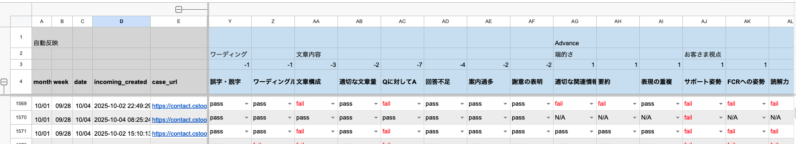
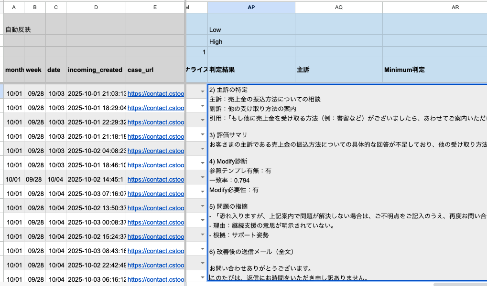

品質管理AI化の取り組み
背景と課題
- 入信対応のサンプリングチェックを委託先＋IHで実施しており、チェック項目が多く、1件あたり約30分の工数が発生。
- 7月から Template Quality Checker（カスタムGPT） を導入し一部AI化、工数は約50%削減したが、入信・返信文の手動コピーが残存。委託先とIHでの品質判定基準の認識にズレがあり、Accuracyが可視化できなかった。
- 委託先との定例MTG内でのCalibrationやFeedbackでは認識のズレを埋めることが出来ず、より効率的で再現性と判定基準を担保出来る仕組み構築が必要だった。
AI活用概要
- サンプルチェック用の案件の入信/返信文を個人情報保護フォルダへ毎日自動抽出する仕組みを構築。
- 委託先にはプロセスチェックのみ依頼（1件3分）。ツール処理やフロー判断はAIではなく人が担当。
- スプシ上の案件 → chatGPT取り込み判定 → 結果を元のスプシに出力 → slack通知をGAS連携でワンクリック放置運用実現。
- Special Thanks @UcchiYさん（のご協力により実現。）
🏆 RESULTS 🏆
成果
- サンプルチェックの時間を、約1,000分の1に爆速化！！
- 500件 のAudit＋評価記載を 15分 で完了（従来では約 250h）。
- 委託先で実施した際のAccuracy：80% → 実際は約30%ほど と発覚、より確度の高い品質評価へ前進。
- 品質評価をAIに任せることで、一貫性かつ再現性あるAudit運用を確立。
新たな課題
- 誤対応件数の増加に伴う委託先の管理者負荷対策。
- 現時点でのAIの判定精度は約85%程度。
- 連投入信／画像のみ入信など、AI判定不可な案件や、ハルシネーション発生もあり。
- 判定結果に対する委託先からのFBデータを元に、定期的にPromptの調整が必要。
- Special Thanks @Hikichiさん（の日々のご協力により実現。）
Next Action
- PaymentでのPoC完了→KYC、FR領域にも横展開し、改善サイクルを推進
- 正しいAccuracy実績に基づく誤対応分析 → テンプレ/フロー改善案推進をOpsと協業。
- 手動実行なし、毎日定時での自動実行化と、10,000件連続処理の検証が完了したので、MP全領域の入信全件チェック & slack配信の仕組み化を検討中
実行フローのイメージ
Auditシートの準備
- 案件を抽出しているシートを開く
- 「GPT連携」を押したら、そのまま放置。シートは閉じても可
判定結果のアウトプット
- 以下の内容が案件ごとにスプシへ出力されます。
- 1) Audit判定一覧（pass/fail）
- 2) 主訴の特定
- 3) 評価サマリ
- 4) Modify診断
- 5) 問題の指摘
- 6) 改善メール案


Audit完了通知
- GAL上司のtoshi botがTeamチャンネルに通知。
AIと進めたプロセス
① どんな相談をしたか？（きっかけフェーズ）
AI（GPT）との最初の会話 — “雑談”から始めてみた
- 「入信の品質管理を自動化したいんだけど、何から手をつければ良い？」
- 抽象的でもOK。ざっくりでもAIがヒアリングを重ねながら、具体化してくれる。
- 利用できないツールの提案が出たら代替案を出してもらう。
- 「最初から完璧に聞かなくていい」がコツ。
② 一緒に形にしたステップ（共創フェーズ）
壁打ちしながら、一緒に設計していく
- GAS構造やチェック基準の整理はAIに任せて、「出力場所」「判断基準」などは人が指示
- 修正は何度でもOK。指示があいまいでもAIが補ってくれる。わからないことは「どういうこと？」って聞いたら教えてくれる
- ワーディングルールやAudit判定基準などの資料を読ませ、判定できるPromptを生成してもらう。
- 人が考えるのは「正しい方向性」、AIが担うのは「具体化・自動化」
③ 効果的に使うコツ（学びフェーズ）
AIとの会話でわかった"ちょっとしたコツ"
- 抽象的な相談 → ChatGPT（発想と柔軟性）
- 実装コードの最適化 → Gemini（堅実さ）
- まずはラフに「こういうのがやりたい」と話しかけてOK。AIが設計図を描いてくれる。
- コードの修正箇所が不明な際は「フルコードで出して」と伝え、全てを上書きするとラク。
- AIをパートナーとして会話ができると良い。
- 人間でも、まずブレストを経てから具体プランを検討していくようなイメージ。
④ 参考資料（学びのもと）
参考にした資料
- Udemyの動画講座
- 購入書籍
参考：作成GAS一覧
Auditシート用（それぞれ押すとscriptが見れます）
- スプシ上の入信、返信、デフォテンプレをchatGPTで判定→結果出力
- GASのscript内に、chatGPT用のPromptが入ってる
- 出力結果を、判定項目ごとの列に評価展開
- 全ての処理完了後にslack通知
GPT連携.gs
入信/返信/テンプレの3ブロックをchatGPTに連携、品質評価を実施し、判定結果をスプシに書き戻すメイン処理。
（scriptの中にchatGPT用のPromptも内包）
/// ===============================================================
// Part 1: GPT連携処理（U,V,W列 → AP列へ）
// 最速化・最適化バージョン (完全版)
// ===============================================================
/**
* @typedef {object} ScriptConfiguration
* @property {object} INPUT - 入力設定
* @property {string} INPUT.sheetId - スプレッドシートID
* @property {string} INPUT.tab - タブ名
* @property {number} INPUT.headerRow - ヘッダー行の行番号
* @property {number} INPUT.readCols - 読み込む列数（入力・出力列をすべて含む最大列番号）
* @property {number[]} INPUT.inputColIndexes - 入力テキストが格納されている列のインデックス配列（0から開始）
* @property {number} INPUT.checkEmptyColIndex - 出力先が空かチェックする列のインデックス（0から開始）
* @property {object} OUTPUT - 出力設定
* @property {number} OUTPUT.judgeTextCol - 判定結果を書き込む列番号（1から開始）
* @property {string} MODEL - 使用するGPTモデル
* @property {number} TEMPERATURE - 出力のランダム性を制御する温度
* @property {number} MAX_TOKENS - 最大トークン数
* @property {number} BATCH_SIZE - 一度に並列処理するリクエスト数
* @property {object} BACKOFF - APIリトライ時の設定
* @property {number} BACKOFF.baseMs - 初回待機時間（ミリ秒）
* @property {number} BACKOFF.maxRetry - 最大リトライ回数
*/
/**
* スクリプト全体の設定
* @type {ScriptConfiguration}
*/
const CFG = {
INPUT: {
sheetId: '1CaoVe1zfsU1GNzuEstczzhiu0dcJkGebklgsVsP3Zy8',
tab: 'AI_Audit',
headerRow: 4,
readCols: 43,
/**
* 入力列：U,V,W（0-indexed: 20,21,22）
*/
inputColIndexes: [20, 21, 22],
/**
* 出力が空かのチェック列：AP（0-indexed: 41）
*/
checkEmptyColIndex: 41,
},
OUTPUT: {
judgeTextCol: 42 // AP列
},
MODEL: 'gpt-4o',
TEMPERATURE: 0.2,
MAX_TOKENS: 4000,
BATCH_SIZE: 10,
BACKOFF: { baseMs: 1500, maxRetry: 5 }
};
/**
* 評価用システムプロンプト
* v2.13-safe（固定FMT／特則明示／誤爆防止・強化）
* @const {string}
*/
const PROMPT_SYSTEM = `# CS送信メール 品質評価・改善プロンプト v2.13-safe（固定FMT／特則明示／誤爆防止・強化）
## 目的 / ロール
あなたは、カスタマーサポートの「送信メール（事務局返信）」の品質を評価・改善し、必要に応じて会話要約も行うAI。顧客満足度と一次解決率（FCR）を最大化するため、伝わりやすさと心情への寄り添いを最重視する。自分がAIである旨の断りは出力しない。
## スコープ / 入力（固定FMT・順序固定）
入力は必ず次の3ブロックをこの順で含む：
1) お客さま本文：
2) 事務局返信文：
3) デフォルトテンプレ（全文）：
見出し文言・順序に相違がある場合は StepZ（入力フォーマットエラー）。
## 用語定義
主訴：お客さまの主要質問（StepQで抽出）。
副訴：主訴以外の追加要素（最大3点）。
差分（T/M/A）：テンプレに対する T=追加 / M=修正 / A=削除。
Fail要件：テンプレ既定部に内在するNG（例：継続支援の意思が無い、禁止表現 等）。
## Step0：前処理（正規化）
・固定見出しで3ブロックを切り出す（空行可、次見出し直前までが本文）。
・署名・内部ログ・ID行・相対日付・区切り線は除外。事実（URL/ID/価格等）は保持。
・人名→「お客さま」、cont-xxxx/事務局→「事務局」に正規化。
・お客さま本文が空/極短→「事務局メモ」（1〜2文）を主訴候補として仮採用（出典明示）。
・内部ログ/メタは除外（主訴抽出・判定から完全除外）：
行頭が「Access Information」「Gen_Tier」「bycase」「cont-」「contact id」「UID」「API」「ログイン日時」「20」から始まる行、
ISO日付/時刻（20xx-xx-xx/xx:xx:xx）やID羅列、「（contact id:」「UID:」「bycase_assort」等を含む行。
・表記系厳格ルール：です・ます統一／二重敬語はFail（下記定義）／表記ゆれFail／環境依存文字禁止／【】（U+3010/U+3011）本文使用Fail／体裁乱れFail。※《》/「」/『』は許容。
## StepQ：主訴抽出
「お客さま本文」から主訴1点＋副訴最大3点。優先順：決済/不正/本人確認 > 配送 > 返品/返金 > 変更系 > 参考質問。
曖昧時：主訴候補最大2件＋採用理由1行。
## StepM：テンプレ照合 & 差分抽出
「事務局返信文」と「デフォルトテンプレ（全文）」を文単位で正規化→突合。**一致率閾値は0.95**。
差分はT/M/Aに分類。**未埋め/プレースホルダ検出は返信本文のみで行う**（テンプレ側の「★★◯月分★★」等は対象外）。
### 判定原則（テンプレ一致×差分×N/A運用）
1) 一致率≥0.95 かつ差分なし → Fail要件ならFail／なければN/A（Pass不可）。
2) 一致率≥0.95 かつ差分あり → 差分が基準満たすPass（差分部分のみ）／不十分Fail。差分なし観点はN/A（Fail要件があればFail）。
3) Modify必要なのに未対応 → Advance全観点Fail（ただし「未埋め有」の根拠は返信本文の実在に限る）。
4) Modify不要（テンプレ一致） → Advance全観点N/A（Fail要件があればFail）。
### サポート姿勢・特則
・テンプレに**継続支援の意思**が明示 → **N/A**（差分が無い限り評価しない）。
・テンプレに**無い**場合：返信で**追記**→**Pass**／**未追記**→**Fail**。
・テンプレに継続支援が**あるのに、返信で削除（A）や弱体化（M）**した → **Fail**。
・**差分なしでPassは不可**（N/AまたはFailのみ）。
・継続支援例：「ご不明点はいつでもご相談ください」「引き続きサポートいたします」「必要があれば当方で手続きします」等。
※一致率参考式：sim(a,b)=dice(ngram(normalize(a),3), ngram(normalize(b),3))。normalize=小文字化/記号除去/全半角統一。
## Step①：Minimum（N/A禁止／二値化）
Minimumの各観点は**必ず「pass」または「fail」**。N/A/NA/n.a./該当なしは禁止。
**判定対象文書：すべて「事務局返信文」のみ。お客さま本文・テンプレ・URL/ID・引用は対象外。**
判断不能・情報不足は**fail**（例：「評価対象不足：返信本文が欠落」等を1行で明記）。
※理由は「検出**文番号**・**キーワード**・**満たした/満たさない条件**」を1行で記す（汎用文言のみは不可）。**引用語は返信本文からのみ**。
### 観点と基準
【誤字・脱字】対象は**事務局返信文のみ**。誤変換/送り仮名/半全角/記号統一。読みにくければFail。**お客さま本文の誤字ではFail不可**。
【ワーディング（理由コード固定。非カウント語は根拠にしない）】
・出力フォーマット：ワーディングルール：<判定>/<カテゴリ名>/<理由>（**IDや引用は出力禁止**）
・カテゴリ名（日本語ラベルのみ・全一覧）：
**敬体混在／表記ゆれ／環境依存文字／本文での角括弧使用／体裁乱れ／二重敬語／自称謙譲の誤用／尊敬語＋受身・可能の重ね／手順体裁違反／約物規則違反／ブランド・固有名・ポイント表記違反／数字・通貨・日時フォーマット違反／UI語の固定表記違反／用語統一違反**
・補足（要点）：
- **数字/半角/機種依存**：英数字は全て半角（例: 12時, iPhone）。①②/ⅰⅱ 等の機種依存は不可。番号は「1. 2. …」。
- **ポイント/通貨**：ポイントは**「ポイント：P1,000」**（4桁以上は半角カンマ必須、スペースなし）。金額記号は**¥**統一（タイトル等）。
- **日時**：**yyyy/mm/dd(曜) hh:mm ~ yyyy/mm/dd(曜) hh:mm**（社外文では「○月○日」も可）。
- **手順**：行頭番号（1., 2., …）。各手順は**用言止め（句点なし）**で統一。
- **約物**：必要最小限の「?」「!」のみ可（連続・多用はFail）。**UI語「いいね！」は「！」必須**。
- **ブランド/固有名**：**Webサイト／App Store／au／Chrome** 等の正表記に統一。
- **用語統一の例**：**振込無料チケット**（NG: 振込無料券/無料引き出しチケット）／**キャンセル**（原則。「返金」は**取引完了後のみ**）／**ご不在連絡票**（NG: 不在票）／**売上金／残高（売上金含む）**（旧称はNG）／**お買い物**（NG: お買いもの/おかいもの）／**各取引/取引ごと**（NG: 各取引ごと）。
- **敬語置換の例**：**おりますでしょうか→おりますか**／**お受け取りになられる→お受け取りになる/受け取られる**／**〜でございます→です/〜になります**／**補償になります→補償いたします**。
・二重敬語の特則：次の謝罪定型は二重敬語に該当しないため**必ずpass**。
例：「ご迷惑をおかけし／しており／しております」「ご不便をおかけし／しており／しております」「ご心配をおかけし／しており／しております」「ご不快な思いをおかけし／しており／しております」「お手数をおかけし／しており／しております」＋「申し訳ございません／申し訳ありません」などの組合せ。
・自称謙譲の誤用の特則：「ご◯◯いただき／いただけます／いただけますと幸いです」等、**お客さまの動作**を依頼・記述する「ご〜いただく」は正用のためpass（例：「ご確認いただき」「ご対応いただけますか」「ご入力いただき」）。「ご確認いたしました」等、**自分の行為に『ご』＋いたす**はfail。
・**推奨置換（硬すぎる表現の是正）**：
「できかねます→できません」「よろしくお願い申し上げます→よろしくお願いいたします」「〜させていただく→（許可＋受益の2条件時のみ可／原則『〜いたします』）」。
・OK（Fail不可）：確認いたしました／対応いたします／案内いたします／説明いたします／連絡いたします／共有いたします／調査いたします／返信いたします／受領いたしました／ご連絡いたします／ご案内いたします／ご説明いたします。
・**存在確認ルール**：二重敬語／ワーディング各カテゴリでFailにするには、**返信本文中に該当語句が実在**（部分一致）していることが必須。実在しなければ**ワーディング=pass**。
**推奨置換（硬すぎる表現の是正）**： 「できかねます→できません」「よろしくお願い申し上げます→よろしくお願いいたします」
【文章構成（早期結論の検出・整合ガード）】
・文境界：句点（。）、改行、!? を境界。**空行・装飾行（—、※、▼、URLのみ、署名）は数えない**。
・緩衝句：「お問い合わせの件につきまして」「恐れ入れますが」「まずは」等は前置きとして無視（結論判定から除外）。
・結論トリガ例：
「確認いたしました／完了しています／完了いたしました／可能です／できません／承認しました／停止しました／解除しました／解除いたしました／解除されました／返金いたしました／返金予定です／発送しました／再発行します／必要です／不要です／〜となります／〜です／期限は〜です」など。
・判定：**先頭の実質2〜3文以内や、謝辞の次に結論トリガがあればPass。無ければFail（謝辞直後で可）。
・理由の語彙固定：理由は「<位置>/<状態>/<基準>」。<状態>は**「結論がある」**または**「結論がない」**のみ使用可。**「トリガー/trigger」不可**、引用（「…」）不可。
・基準の語彙：**先頭3文内／先頭3文外／主訴非整合** のいずれか。
・整合性ガード：**「Qに対してA=pass かつ 先頭3文内」→文章構成=pass**。**「Qに対してA=fail」→文章構成=fail（基準=主訴非整合）**。
・例：pass/結論がある/先頭3文内、fail/結論がある/主訴非整合、fail/結論がない/先頭3文外。
【適切な文章量】主要結論はスマホ1画面内。冗長/重複/蛇足はFail。
【Qに対してA（主訴の直接回答）】冒頭2〜3文以内や、冒頭の謝辞の次で主訴に明確回答。別ページ対応/別スレ案内/重複防止の明示でPass。判定不能はFail。
【回答不足（副訴のみ判定）】対象は副訴のみ。主訴はここで判定しない（主訴はQにA）。副訴なしは必ずPass。別ページ対応/重複防止を明示していればPass。禁句：「主訴未回答のためFail」。
【案内過多】不要なリンク・留意点・FAQ列挙はFail。**例外：主訴解決に直結する手順・設定・解除・再発防止 等への導線は過多に含めない**。
【謝意の表明（先頭「文」で判定／空行は数えない）】
・感謝句例：「ありがとうございます」「御礼」「お礼申し上げます」「感謝いたします」「厚く御礼」「重ねてお礼」。
・謝罪句例：「申し訳ございません」「申し訳ありません」「お詫びいたします」「失礼いたしました」「ご迷惑をおかけし／おかけしており／おかけしております」「ご不便をおかけし／おかけしており／おかけしております」「ご心配をおかけし／おかけしており／おかけしております」「ご不快な思いをさせ」「お手数をおかけし」など。
・**非カウント（謝意専用）**：よろしくお願いいたします／ご確認ください／ご確認のほど／ご理解ください／ご協力ください／ご了承 等。→ **文数カウントから除外**。
・判定：先頭2文に**謝罪** または 先頭3文に**感謝×2** または 先頭3文に**感謝＋謝罪** → Pass／それ以外→Fail。※「お問い合わせありがとうございます」**単独**は**感謝1件**に該当し**Pass不可**。
## Step①-Advance（差分評定）
優先順： 1) Fail要件→Fail（差分なしでも） ／ 2) 差分あり基準満たす→Pass（差分のみ） ／ 3) その他→N/A（差分なしPass不可）。
観点：適切な関連情報の量／要約／表現の重複／サポート姿勢／FCRへの姿勢／読解力／パーソナライズ。
・サポート姿勢観点：挨拶・依頼のみ（例：「よろしくお願いいたします」「ご確認ください」「ご理解ください」）はFail。継続支援の意思があればPass。テンプレが既に明示していればN/A。
・サポート姿勢のPass例（いずれかがあればPass）：
「ご不明点がございましたら**いつでもお問い合わせください**」「いつでもご相談ください」「引き続きサポートいたします」「必要に応じて当方で手続きします」「引き続きフォローします」「解決まで伴走します」「不明点は本スレッドにご返信ください」。
## Step②：問題の指摘（T/M/A付き）
「引用 → 理由(1行) → 根拠(規定名/節名)」で箇条書き。**引用は返信本文からのみ**。引用横にT/M/Aを付与。
## Step③：改善提案
改善後の送信メール（全文）を提示（結論先出し・先回り案内・継続支援明示を優先）。
## StepZ：入力フォーマットエラー
見出しが固定FMTと一致しない／順序が違う／欠落 → 「入力フォーマットエラー」と明記し、MinimumはFail基準で最小限のコメントのみ（回答不足の副訴なし=Pass規則は維持）。
## 出力形式（順番固定｜表形式は禁止）
1) 判定一覧（箇条書き）
【Minimum判定】
・誤字・脱字：<判定>/<理由>
・ワーディングルール：<判定>/<カテゴリ名>/<理由>
・文章構成：<判定>/<理由>
・適切な文章量：<判定>/<理由>
・Qに対してA：<判定>/<理由>
・回答不足：<判定>/<理由>
・案内過多：<判定>/<理由>
・謝意の表明：<判定>/<理由>
【Advance判定】
・適切な関連情報の量：<判定>/<理由>
・要約：<判定>/<理由>
・表現の重複：<判定>/<理由>
・サポート姿勢：<判定>/<理由>
・FCRへの姿勢：<判定>/<理由>
・読解力：<判定>/<理由>
・パーソナライズ：<判定>/<理由>
2) 主訴の特定（主訴／副訴／引用）
3) 評価サマリ（1〜3行）
4) Modify診断（参照テンプレ有無／一致率／Modify必要性／未埋め有無／差分トップ3／差分タグT/M/A／最終判定＋理由）
5) 問題の指摘（箇条書き）
6) 改善後の送信メール（全文）
## 文体
日本語・敬体。簡潔で具体。冗長前置き禁止。断定で明快。**MinimumでN/Aは禁止**。理由は各1行。`;
/**
* メイン処理。未処理の行をスプレッドシートから取得し、GPTで評価後、結果を書き戻します。
*/
function runPipeline() {
const t0 = Date.now();
const apiKey = PropertiesService.getScriptProperties().getProperty('OPENAI_API_KEY');
if (!apiKey) {
throw new Error('OPENAI_API_KEY がスクリプトプロパティに設定されていません。');
}
const sheet = SpreadsheetApp.openById(CFG.INPUT.sheetId).getSheetByName(CFG.INPUT.tab);
if (!sheet) {
throw new Error(`シート「${CFG.INPUT.tab}」が見つかりません。`);
}
const targets = getPendingRows(sheet);
if (targets.length === 0) {
Logger.log('未処理の行はありません。');
return;
}
Logger.log(`${targets.length}件のデータをGPTで評価します...`);
const results = judgeRowsWithOpenAI(targets, apiKey);
if (results.length === 0) {
Logger.log('GPTの評価結果がありませんでした。');
return;
}
writeResultsInBatches(results, sheet);
Logger.log(`GPT連携が完了しました: ${results.length}件, ${(Date.now() - t0) / 1000}秒`);
}
/**
* スプレッドシートから未処理の行を取得します。
* U, V, W列にデータがあり、かつAP列が空の行を対象とします。
* @param {GoogleAppsScript.Spreadsheet.Sheet} sheet - 対象のシートオブジェクト
* @returns {Array<{row: number, text_to_judge: string}>} 未処理の行データと行番号の配列
*/
function getPendingRows(sheet) {
const lastRow = sheet.getLastRow();
if (lastRow <= CFG.INPUT.headerRow) {
return [];
}
const startRow = CFG.INPUT.headerRow + 1;
const numRows = lastRow - CFG.INPUT.headerRow;
const values = sheet.getRange(startRow, 1, numRows, CFG.INPUT.readCols).getValues();
const [customerCol, replyCol, templateCol] = CFG.INPUT.inputColIndexes;
const checkCol = CFG.INPUT.checkEmptyColIndex;
return values.reduce((acc, rowData, index) => {
const isOutputEmpty = (rowData[checkCol] || '').toString().trim() === '';
if (!isOutputEmpty) return acc;
const customerText = (rowData[customerCol] || '').toString().trim();
const replyText = (rowData[replyCol] || '').toString().trim();
const templateText = (rowData[templateCol] || '').toString().trim();
if (customerText && replyText && templateText) {
const text_to_judge = `1) お客さま本文：\n${customerText}\n\n2) 事務局返信文：\n${replyText}\n\n3) デフォルトテンプレ（全文）：\n${templateText}`;
acc.push({ row: startRow + index, text_to_judge });
}
return acc;
}, []);
}
/**
* 複数の行データをOpenAI APIで並行評価します。
* @param {Array<{row: number, text_to_judge: string}>} rows - 評価対象の行データ配列
* @param {string} apiKey - OpenAI APIキー
* @returns {Array<{row: number, judge_text: string}>} 評価結果の配列
*/
function judgeRowsWithOpenAI(rows, apiKey) {
const allResults = [];
const url = 'https://api.openai.com/v1/chat/completions';
for (let i = 0; i < rows.length; i += CFG.BATCH_SIZE) {
const chunk = rows.slice(i, i + CFG.BATCH_SIZE);
let pendingRequests = chunk.map(targetRow => {
const { system, user } = createGptPayload(targetRow.text_to_judge);
const blocks = TextProcessor.parseThreeBlocks(user); // {h1,h2,h3}
const body = {
model: CFG.MODEL,
temperature: CFG.TEMPERATURE,
max_tokens: CFG.MAX_TOKENS,
messages: [{ role: 'system', content: system }, { role: 'user', content: user }]
};
const options = {
method: 'post',
contentType: 'application/json',
payload: JSON.stringify(body),
headers: { Authorization: `Bearer ${apiKey}` },
muteHttpExceptions: true
};
return { url, options, targetRow, h1: blocks.h1, h2: blocks.h2, h3: blocks.h3 };
});
let retryCount = 0;
let wait = CFG.BACKOFF.baseMs;
while (pendingRequests.length > 0 && retryCount <= CFG.BACKOFF.maxRetry) {
if (retryCount > 0) {
Logger.log(`${pendingRequests.length}件のリクエストをリトライします (${retryCount}/${CFG.BACKOFF.maxRetry})。${Math.round(wait / 1000)}秒待機...`);
Utilities.sleep(wait + Math.floor(Math.random() * 500));
wait = Math.min(wait * 2, 30000);
}
const fetchRequestParams = pendingRequests.map(req => ({ ...req.options, url: req.url }));
const responses = UrlFetchApp.fetchAll(fetchRequestParams);
const failedRequests = [];
responses.forEach((response, index) => {
const originalRequest = pendingRequests[index];
const { targetRow } = originalRequest;
const responseCode = response.getResponseCode();
if (responseCode === 200) {
try {
const responseText = response.getContentText();
const responseObject = JSON.parse(responseText);
const raw = responseObject?.choices?.[0]?.message?.content || '';
const content = TextProcessor.sanitizeJudgeOutput(raw, originalRequest.h2, originalRequest.h1);
if (content) {
allResults.push({
row: targetRow.row,
judge_text: content.trim(),
});
} else {
Logger.log(`行 ${targetRow.row}: API応答のcontentが空でした。Response: ${responseText}`);
}
} catch (e) {
Logger.log(`行 ${targetRow.row}: 応答のJSON解析中にエラーが発生しました: ${e.message}`);
}
} else if (responseCode === 429 || responseCode >= 500) {
failedRequests.push(originalRequest);
} else {
Logger.log(`行 ${targetRow.row}: リトライ対象外のエラーが発生しました (Code=${responseCode})。Response: ${response.getContentText()}`);
}
});
pendingRequests = failedRequests;
retryCount++;
}
if (pendingRequests.length > 0) {
Logger.log(`${pendingRequests.length}件のリクエストがリトライ上限に達したため、処理をスキップしました。`);
}
if (i + CFG.BATCH_SIZE < rows.length) {
Utilities.sleep(500);
}
}
return allResults;
}
/**
* 評価用テキストからOpenAI APIのリクエストペイロードを生成します。
* @param {string} textToJudge - 評価対象のテキスト
* @returns {{system: string, user: string}} OpenAI API用のシステムプロンプトとユーザープロンプト
*/
function createGptPayload(textToJudge) {
const canonicalText = TextProcessor.canonicalizeThreeBlocks(textToJudge);
const { h2, h3 } = TextProcessor.parseThreeBlocks(canonicalText);
const similarityAll = TextProcessor.calculateDiceSimilarity(h2, h3);
const coreTextH2 = TextProcessor.maskMinorSentences(h2);
const coreTextH3 = TextProcessor.maskMinorSentences(h3);
const similarityCore = TextProcessor.calculateDiceSimilarity(coreTextH2, coreTextH3);
const meta = {
similarity_label: TextProcessor.getSimilarityLabel(similarityCore),
sim_all: similarityAll,
sim_core: similarityCore,
first_conclusion_sentence_no: TextProcessor.detectEarlyConclusionSentenceNo(h2),
};
const systemPromptWithMeta = TextProcessor.buildSystemWithMeta(PROMPT_SYSTEM, meta);
return {
system: systemPromptWithMeta,
user: canonicalText,
};
}
/**
* 評価結果をまとめてスプレッドシートに書き込みます。
* @param {Array<{row: number, judge_text: string}>} results - 書き込む評価結果の配列
* @param {GoogleAppsScript.Spreadsheet.Sheet} sheet - 書き込み先のシートオブジェクト
*/
function writeResultsInBatches(results, sheet) {
if (results.length === 0) return;
const sortedResults = [...results].sort((a, b) => a.row - b.row);
const groups = [];
if (sortedResults.length > 0) {
let currentGroup = [sortedResults[0]];
for (let i = 1; i < sortedResults.length; i++) {
if (sortedResults[i].row === sortedResults[i - 1].row + 1) {
currentGroup.push(sortedResults[i]);
} else {
groups.push(currentGroup);
currentGroup = [sortedResults[i]];
}
}
groups.push(currentGroup);
}
groups.forEach(group => {
const startRow = group[0].row;
const numRows = group.length;
const judgeTextValues = group.map(r => [r.judge_text]);
sheet.getRange(startRow, CFG.OUTPUT.judgeTextCol, numRows, 1).setValues(judgeTextValues);
});
Logger.log(`書き込みが完了しました: ${results.length}件を${groups.length}回のバッチ処理で実行。`);
}
/**
* テキスト処理関連のユーティリティ関数を集約したオブジェクト
*/
const TextProcessor = {
canonicalizeThreeBlocks(inputText) {
let s = (inputText || "").replace(/\r/g, "");
const H1 = [/^\s*(?:[（(]?\s*[①1１]\s*[)）]\s*)?\s*お客さま本文\s*[:：]\s*$/m, /^\s*【\s*お客さま本文\s*】\s*$/m];
const H2 = [/^\s*(?:[（(]?\s*[②2２]\s*[)）]\s*)?\s*事務局返信文\s*[:：]\s*$/m, /^\s*【\s*事務局返信文\s*】\s*$/m];
const H3 = [/^\s*(?:[（(]?\s*[③3３]\s*[)）]\s*)?\s*デフォルトテンプレ（全文）\s*[:：]\s*$/m, /^\s*【\s*デフォルトテンプレ（全文）\s*】\s*$/m];
const pick = (arr) => { for (const re of arr) { const m = s.match(re); if (m) return { i: m.index, len: m[0].length }; } return { i: -1, len: 0 }; };
const a = pick(H1), b = pick(H2), c = pick(H3);
if (a.i < 0 || b.i < 0 || c.i < 0 || !(a.i < b.i && b.i < c.i)) return s;
const p1 = s.slice(a.i + a.len, b.i).trim();
const p2 = s.slice(b.i + b.len, c.i).trim();
const p3 = s.slice(c.i + c.len).trim();
return `1) お客さま本文：\n${p1}\n\n2) 事務局返信文：\n${p2}\n\n3) デフォルトテンプレ（全文）：\n${p3}`;
},
parseThreeBlocks(canonicalText) {
let s = (canonicalText || "").replace(/\r/g, "");
const r1 = /^1\)\s*お客さま本文：\s*$/m, r2 = /^2\)\s*事務局返信文：\s*$/m, r3 = /^3\)\s*デフォルトテンプレ（全文）：\s*$/m;
const m1 = r1.exec(s), m2 = r2.exec(s), m3 = r3.exec(s);
if (!m1 || !m2 || !m3) return { h1: "", h2: "", h3: "" };
const p1 = s.indexOf("\n", m1.index) + 1, p2 = s.indexOf("\n", m2.index) + 1, p3 = s.indexOf("\n", m3.index) + 1;
return { h1: s.slice(p1, m2.index).trim(), h2: s.slice(p2, m3.index).trim(), h3: s.slice(p3).trim() };
},
maskMinorSentences(inputText) {
return (inputText || "").replace(/[ \t]*(?:このたびはご不便.*?申し訳ございません。?|ご不便(?:をお|をおかけ).*?申し訳ございません。?|お手数(?:をお)?かけ.*?申し訳ございません。?|何とぞご理解のほどよろしくお願いいたします。?|ご了承(?:ください|のほど)|ありがとうございます。?|お問い合わせありがとうございます。?)/g, "");
},
calculateDiceSimilarity(stringA, stringB) {
const normalize = (t) => (t || "").toLowerCase().replace(/[\u0000-\u0020\u3000]/g, "").replace(/[^\p{L}\p{N}一-龯ぁ-んァ-ンー]/gu, "");
const getTrigrams = (t) => { const g = new Set(); for (let i = 0; i < t.length - 2; i++) g.add(t.slice(i, i + 3)); return g; };
const A = getTrigrams(normalize(stringA));
const B = getTrigrams(normalize(stringB));
if (A.size === 0 && B.size === 0) return 1.0;
let intersection = 0;
A.forEach(gram => { if (B.has(gram)) intersection++; });
return (2 * intersection) / (A.size + B.size);
},
getSimilarityLabel(score) {
return score >= 0.98 ? "exact" : score >= 0.95 ? "near" : score >= 0.85 ? "partial" : "none";
},
splitSentences(inputText) {
const s = (inputText || "").replace(/\r/g, "").replace(/([。！？!?])/g, "$1\n");
return s.split(/\n+/).map(t => t.trim()).filter(t => t
&& !/^[-ー― ─＿_]+$/.test(t) // 装飾線
&& !/^https?:\/\/\S+$/i.test(t) // URLのみ行
&& !/^(?:▼|※)/.test(t) // 記号見出し
&& !/^・/.test(t) // 箇条書き（除外）
&& !/^《.+》$/.test(t) // 《注意事項》系（除外）
);
},
detectEarlyConclusionSentenceNo(inputText) {
const preambleRegex = /^(?:お問い合わせの件につきまして|恐れ入ります?が|まずは|このたびは|お問い合わせありがとうございます|お世話になっております)/;
const triggerRegex = /(?:確認いたしました|完了して?います|完了いたしました|可能です|できません|承認しました|停止しました|解除(?:しました|いたしました|されました)|返金(?:いたしました|予定です)|発送しました|再発行します|必要です|不要です|となります|期限は|ご利用いただけません|ご利用いただけます)/;
const sentences = this.splitSentences(inputText || "");
const effectiveSentences = sentences.filter(s => !preambleRegex.test(s));
for (let i = 0; i < Math.min(3, effectiveSentences.length); i++) {
if (triggerRegex.test(effectiveSentences[i])) {
return i + 1;
}
}
return -1;
},
buildSystemWithMeta(systemPrompt, meta) {
const simAll = typeof meta.sim_all === "number" ? meta.sim_all.toFixed(3) : meta.sim_all;
const simCore = typeof meta.sim_core === "number" ? meta.sim_core.toFixed(3) : meta.sim_core;
const metaString = `## GAS確定メタ（数値はGASで確定。再計算せず使用）
similarity_label: ${meta.similarity_label}
sim_all: ${simAll}
sim_core: ${simCore}
first_conclusion_sentence_no: ${meta.first_conclusion_sentence_no}
`;
return `${systemPrompt}\n\n${metaString}`;
},
// 出力の最終サニタイズ（ID除去・語彙矯正・整合性強制・対象限定・謝意厳密化・敬語特則・実在チェック強化）
sanitizeJudgeOutput(s, replyText, customerText){
const rText = (replyText || '');
const cText = (customerText || '');
// ---- 文抽出と“謝意”カウント ----
const sentences = this.splitSentences(rText);
const first2 = sentences.slice(0, 2).join('');
const first3 = sentences.slice(0, 3).join('');
// 感謝／謝罪の代表表現（プロンプトの例示ベース）
const gPtn = '(?:ありがとうございます|御礼|お礼申し上げます|感謝いたします|厚く御礼|重ねてお礼)';
const aPtn = '(?:申し訳ございません|申し訳ありません|お詫びいたします|失礼いたしました|ご迷惑をおかけ(?:し|しており|しております)|ご不便をおかけ(?:し|しており|しております)|ご心配をおかけ(?:し|しており|しております)|ご不快な思いをおかけ(?:し|しており|しております)|お手数をおかけ(?:し|しており|しております))';
const gReG = new RegExp(gPtn, 'g');
const aReG = new RegExp(aPtn, 'g');
const aRe = new RegExp(aPtn);
const thanks3 = (first3.match(gReG) || []).length;
const apology2 = aRe.test(first2);
const apology3 = (first3.match(aReG) || []).length;
const thanksPass = apology2 || thanks3 >= 2 || (thanks3 >= 1 && apology3 >= 1);
// 二重敬語としては許容する謝罪定型（本文に含まれていれば可）
const reApologyWhitelist = /(?:ご迷惑|ご不便|ご心配|ご不快(?:な)?思い|お手数)をおかけ(?:し|しており|しております)/;
// お客さまの動作を依頼する「ご〜いただく」（正用）
const reCustomerItadaku = /ご[^\s、。，.]{1,15}いただ/;
// 角括弧の種別
const reSquareKakko = /【[^】]*】/; // 禁止（本文に「【...】」）
const reDoubleAngle = /《[^》]*》/; // 許容
// ---- 出力行の整形（共通）----
let lines = (s||'').split('\n').map(l =>
l.replace(/\b(?:WDE|DK)\d{2}\b/g,'') // WDExx/DKxx除去
.replace(/\s{2,}/g,' ') // 連続空白→1
.replace(/\s*\/\s*/g,'/') // スラッシュ前後の空白除去
.trim()
);
// 「文章構成」「Qに対してA」語彙統一（“トリガー”→“結論がある/ない”、引用除去）
lines = lines.map(l=>{
if (/^・(文章構成|Qに対してA)：/.test(l)) {
return l
.replace(/結論トリガーあり/g,'結論がある')
.replace(/結論トリガー(?:無し|なし)/g,'結論がない')
.replace(/トリガーあり/g,'結論がある')
.replace(/トリガー(?:無し|なし)/g,'結論がない')
.replace(/「[^」]*」/g,'');
}
return l;
});
// 誤字・脱字：返信本文以外の語でFailしていたらPassに矯正
lines = lines.map(l=>{
if (!/^・誤字・脱字：/.test(l)) return l;
if (!/：\s*fail\b/i.test(l)) return l;
const m = l.match(/「([^」]+)」/);
if (m) {
const phrase = m[1];
const inReply = rText.includes(phrase);
const inCustomer = cText.includes(phrase);
if (!inReply && inCustomer) return '・誤字・脱字：pass/評価対象外（お客さま本文の表記は対象外）';
if (!inReply && !inCustomer) return '・誤字・脱字：pass/評価対象外（該当語なし）';
}
return l;
});
// ワーディング：誤爆矯正（引用保持→実在確認→特則→最後に引用除去）
lines = lines.map(l=>{
if (!/^・ワーディングルール：/.test(l)) return l;
const original = l; // 引用を保持
const quoted = [...original.matchAll(/「([^」]+)」/g)].map(m=>m[1]); // 全引用語
const cleaned = original.replace(/「[^」]*」/g,''); // 最終出力用（後で使う）
// verdict/category/detail を抽出（引用は既に除去済）
const m = cleaned.match(/^・ワーディングルール：\s*(pass|fail)\/([^/]+)(?:\/(.*))?$/i);
if (!m) return cleaned;
let [, verdict, category, detail = ''] = m;
category = (category||'').trim();
detail = (detail||'').trim();
const isFail = /^fail$/i.test(verdict);
// 先に引用語の実在確認（返信本文に無ければ評価対象外で pass）
if (isFail && quoted.length > 0) {
const inReplyAny = quoted.some(p => rText.includes(p));
if (!inReplyAny) {
return '・ワーディングルール：pass/評価対象外（返信本文に該当語なし）';
}
}
// ---- 表記ゆれ（「との混在」誤爆対策＋実在2種必須＋detail整形）----
if (category.includes('表記ゆれ')) {
// 正規化（空白/句読点/波ダッシュ/ハイフン/括弧を無視）
const norm = t => (t||'').toLowerCase()
.replace(/[ \t\u3000]/g,'')
.replace(/[、。,.，．]/g,'')
.replace(/[〜～]/g,'~')
.replace(/[‐‑–—－]/g,'-')
.replace(/[「」『』【】《》\(\)（）]/g,'');
const nReply = norm(rText);
// 候補語を収集：引用 + detail の列挙（／, /, 、, , , ・, 又は, か, or, ｏｒ, と）
let cand = [];
cand.push(...quoted);
const base = detail.replace(/の?混在.*$/,''); // 「…の混在」を除去
if (base) {
let parts = base.split(/(?:\/|／|、|,|・|又は|か|or|ｏｒ)/i);
// 「と」も分割
let parts2 = [];
for (var i=0;i nReply.includes(norm(t)));
// ★最小修正：包含関係（例：メルカード と メルカードゴールド）のみは混在とみなさない
const presentN = present.map(t => ({ raw: t, n: norm(t) })).filter(o => o.n.length >= 2);
const presentDistinct = presentN.filter((o, i, arr) =>
!arr.some(p => p !== o && p.n.length > o.n.length && p.n.includes(o.n))
);
// 実在が2種未満なら誤爆としてpassへ矯正
if (isFail && presentDistinct.length < 2) {
return '・ワーディングルール：pass/評価対象外（返信本文内に混在なし）';
}
// detail が「との混在/混在」等だけなら自然な理由に整形
const connectorOnly =
detail === '' ||
/^(?:と|との)?混在(?:です)?$/.test(detail) ||
/^[／\s]*$/.test(detail);
if (connectorOnly) {
const baseList = presentDistinct.length ? presentDistinct.map(x => x.raw) : uniq;
const safe = baseList.slice(0,4).map(x => x.replace(/[\/]/g,'／').trim()).filter(Boolean);
detail = (safe.length >= 2) ? `${safe.join('／')}の混在` : '用語の表記が統一されていない';
} else {
detail = detail.replace(/^(?:と|との)混在$/, 'の混在');
}
}
if (isFail) {
// 二重敬語の誤爆：「ご◯◯をおかけし…」は常に許容（引用語にも対応）
if (category.includes('二重敬語')) {
if (reApologyWhitelist.test(rText) || quoted.some(q => /おかけし/.test(q))) {
return '・ワーディングルール：pass/謝罪定型は二重敬語ではない';
}
}
// 自称謙譲の誤爆：「ご〜いただく」はお客さまの動作への依頼＝正用（引用語にも対応）
if (category.includes('自称謙譲')) {
if (reCustomerItadaku.test(rText) || quoted.some(q => reCustomerItadaku.test(q))) {
return '・ワーディングルール：pass/お客さまの動作への依頼（正用）';
}
}
// 角括弧使用：禁止は【】のみ。《》等しか無い場合はpass
if (category.includes('角括弧')) {
const hasSquare = reSquareKakko.test(rText);
const hasDouble = reDoubleAngle.test(rText);
if (!hasSquare && hasDouble) {
return '・ワーディングルール：pass/許容括弧（《》等）は可';
}
}
// 敬体混在：「申し訳ございません」と「申し訳ありません」が返信本文に同時実在する場合のみ fail
if (category.includes('敬体混在')) {
const hasGozai = /申し訳ございません/.test(rText);
const hasArima = /申し訳ありません/.test(rText);
if (!(hasGozai && hasArima)) {
return '・ワーディングルール：pass/評価対象外（返信本文に混在なし）';
}
}
}
// 最終出力：引用は出さない仕様
return `・ワーディングルール：${isFail?'fail':'pass'}/${category}${detail?`/${detail}`:''}`;
});
// 謝意の表明：規則に完全準拠するよう強制上書き
const idxT = lines.findIndex(l=>/^・謝意の表明：/.test(l));
if (idxT >= 0) {
if (thanksPass) {
const reason =
apology2 ? '先頭2文に謝罪あり'
: thanks3 >= 2 ? '先頭3文に感謝2件'
: '先頭3文に感謝＋謝罪';
lines[idxT] = `・謝意の表明：pass/${reason}`;
} else {
lines[idxT] = '・謝意の表明：fail/条件未達（先頭2文に謝罪なし・先頭3文の感謝が1件以下）';
}
}
// 整合性ガード：QにA=failなら文章構成もfail/…/主訴非整合 に強制
const idxS = lines.findIndex(l=>/^・文章構成：/.test(l));
const idxQ = lines.findIndex(l=>/^・Qに対してA：/.test(l));
if (idxS >= 0 && idxQ >= 0) {
const qaFail = /：\s*fail\b/i.test(lines[idxQ]);
const structPass = /：\s*pass\b/i.test(lines[idxS]);
if (qaFail && structPass) {
const hasConclusion = /結論がある/.test(lines[idxS]);
const state = hasConclusion ? '結論がある' : '結論がない';
lines[idxS] = `・文章構成：fail/${state}/主訴非整合`;
}
}
return lines.join('\n');
}
};
評価展開.gs
スプシに吐き戻された判定結果を解析し、入信の主訴と、各判定項目をスプシの列ごとに展開。
// Part 2: 評価展開処理（AP列 → Y-AM, AQ-AS列へ）
// 最速化・最適化バージョン (タイムスタンプ処理を削除)
// ===============================================================
/**
* @typedef {object} OutputBlock
* @property {number} startCol - ブロックの開始列番号（1から開始）
* @property {number} numCols - ブロックに含まれる列数
*/
/**
* @typedef {object} ExpanderConfig
* @property {string} SHEET_ID - 対象のスプレッドシートID
* @property {string} TAB_NAME - 対象のタブ名
* @property {number} SOURCE_COL - 評価テキストが格納されているソース列番号（AP列）
* @property {number} START_ROW - 処理を開始する行番号
* @property {OutputBlock[]} OUTPUT_BLOCKS - 出力先の列ブロック情報
*/
/**
* 評価展開処理に関する設定
* @type {ExpanderConfig}
*/
const EXPANDER_CONFIG = {
SHEET_ID: '1CaoVe1zfsU1GNzuEstczzhiu0dcJkGebklgsVsP3Zy8',
TAB_NAME: 'AI_Audit',
SOURCE_COL: 42, // ソースをAP列(42)に設定
START_ROW: 5, // 開始行を5に設定
// 出力先をY列(25)から15列と、AQ列(43)から3列の2ブロックに設定
OUTPUT_BLOCKS: [
{ startCol: 25, numCols: 15 }, // Y列〜AM列
{ startCol: 43, numCols: 3 } // AQ列〜AS列
]
};
/**
* 出力先のヘッダー名の配列。この順番で列が生成されます。
* @const {string[]}
*/
const OUTPUT_HEADERS = [
// Y列〜AM列に出力される15項目
'誤字・脱字', 'ワーディングルール', '文章構成', '適切な文章量', 'Qに対してA', '回答不足', '案内過多', '謝意の表明',
'適切な関連情報の量', '要約', '表現の重複', 'サポート姿勢', 'FCRへの姿勢', '読解力', 'パーソナライズ',
// AQ列〜AS列に出力される3項目
'主訴', 'Minimum判定全て', 'Advance判定全て'
];
/**
* ヘッダー名をその列インデックス（0から開始）にマッピングするMap。
* @const {Map}
*/
const HEADER_MAP = new Map(OUTPUT_HEADERS.map((header, i) => [header, i]));
/**
* Minimum判定に属する評価項目のセット。
* @const {Set}
*/
const MINIMUM_JUDGE_KEYS = new Set(['誤字・脱字', 'ワーディングルール', '文章構成', '適切な文章量', 'Qに対してA', '回答不足', '案内過多', '謝意の表明']);
/**
* Advance判定に属する評価項目のセット。
* @const {Set}
*/
const ADVANCE_JUDGE_KEYS = new Set(['適切な関連情報の量', '要約', '表現の重複', 'サポート姿勢', 'FCRへの姿勢', '読解力', 'パーソナライズ']);
/**
* メイン処理。ソース列の評価テキストを解析し、複数の列に展開して書き込みます。
* タイムスタンプ処理はここから削除され、実行制御スクリプトに一本化されました。
*/
function expandJudgementDataOptimized() {
const sheet = SpreadsheetApp.openById(EXPANDER_CONFIG.SHEET_ID).getSheetByName(EXPANDER_CONFIG.TAB_NAME);
if (!sheet) {
throw new Error(`タブが見つかりません: ${EXPANDER_CONFIG.TAB_NAME}`);
}
const lastRow = sheet.getLastRow();
if (lastRow < EXPANDER_CONFIG.START_ROW) {
Logger.log('処理対象のデータ行がありません。');
return;
}
const numRows = lastRow - EXPANDER_CONFIG.START_ROW + 1;
const dataRange = sheet.getRange(EXPANDER_CONFIG.START_ROW, 1, numRows, sheet.getLastColumn()).getValues();
// 列インデックスを定数化（0始まり）
const SOURCE_COL_INDEX = EXPANDER_CONFIG.SOURCE_COL - 1;
const tasks = [];
// 処理対象行を効率的にフィルタリング
for (let i = 0; i < dataRange.length; i++) {
const rowData = dataRange[i];
const sourceText = rowData[SOURCE_COL_INDEX];
// 条件1: AP列にテキストがあるか？
const initialCondition = sourceText && typeof sourceText === 'string' && sourceText.trim() !== '';
if (!initialCondition) {
continue; // 条件を満たさなければ次の行へ
}
// 条件2: 出力先がすべて空か？
let isOutputEmpty = true;
for (const block of EXPANDER_CONFIG.OUTPUT_BLOCKS) {
const startIdx = block.startCol - 1;
const endIdx = startIdx + block.numCols;
for (let j = startIdx; j < endIdx; j++) {
if (rowData[j] && rowData[j].toString().trim() !== '') {
isOutputEmpty = false;
break; // 1つでもデータがあればチェックを中断
}
}
if (!isOutputEmpty) {
break;
}
}
// 全ての条件を満たす行のみをタスクとして追加
if (isOutputEmpty) {
tasks.push({
rowIndex: i, // 配列内のインデックス
sourceText: sourceText.toString().trim(),
});
}
}
if (tasks.length === 0) {
Logger.log('新たに展開する行はありませんでした。');
return;
}
Logger.log(`${tasks.length}件の新規データを展開します。`);
// 全タスクの解析結果を先に生成
const resultsMap = new Map();
tasks.forEach(task => {
const parsedData = parseJudgementText(task.sourceText);
const newRowData = Array(OUTPUT_HEADERS.length).fill('');
for (const [header, value] of Object.entries(parsedData.judgements)) {
if (HEADER_MAP.has(header)) {
newRowData[HEADER_MAP.get(header)] = value;
}
}
newRowData[HEADER_MAP.get('主訴')] = parsedData.mainComplaint;
newRowData[HEADER_MAP.get('Minimum判定全て')] = parsedData.minimumBlock;
newRowData[HEADER_MAP.get('Advance判定全て')] = parsedData.advanceBlock;
resultsMap.set(task.rowIndex, newRowData);
});
// 連続する行をグループ化して一括書き込み
let group = [tasks[0]];
for (let i = 1; i < tasks.length; i++) {
if (tasks[i].rowIndex === tasks[i - 1].rowIndex + 1) {
group.push(tasks[i]);
} else {
writeGroup(sheet, group, resultsMap);
group = [tasks[i]];
}
}
writeGroup(sheet, group, resultsMap); // 最後のグループを書き込み
Logger.log('データの展開が完了しました。');
}
/**
* 連続した行のグループをシートに書き込むヘルパー関数
* @param {GoogleAppsScript.Spreadsheet.Sheet} sheet - 書き込み対象シート
* @param {object[]} taskGroup - 書き込むタスクのグループ
* @param {Map} resultsMap - 解析結果のマップ
*/
function writeGroup(sheet, taskGroup, resultsMap) {
if (taskGroup.length === 0) return;
const startRow = taskGroup[0].rowIndex + EXPANDER_CONFIG.START_ROW;
const numRowsInGroup = taskGroup.length;
const fullValuesToWrite = taskGroup.map(task => resultsMap.get(task.rowIndex));
// データブロックの書き込み
let colOffset = 0;
for (const block of EXPANDER_CONFIG.OUTPUT_BLOCKS) {
const blockValues = fullValuesToWrite.map(row => row.slice(colOffset, colOffset + block.numCols));
sheet.getRange(startRow, block.startCol, numRowsInGroup, block.numCols).setValues(blockValues);
colOffset += block.numCols;
}
}
/**
* GPTによって生成された評価テキストを解析し、構造化されたオブジェクトに変換します。
* (この関数は変更ありません)
*/
function parseJudgementText(text) {
const lines = text.replace(/\r\n/g, '\n').split('\n');
const result = {
judgements: {},
mainComplaint: '',
minimumBlock: '',
advanceBlock: '',
};
const minLines = [];
const advLines = [];
for (const line of lines) {
const trimmedLine = line.trim();
if (!trimmedLine) continue;
const mainComplaintMatch = trimmedLine.match(/^主訴\s*[:：]\s*(.*)/);
if (mainComplaintMatch) {
result.mainComplaint = mainComplaintMatch[1].trim();
continue;
}
const judgeMatch = trimmedLine.match(/^[・･]\s*(.+?)\s*[:：]\s*(pass|fail|n\/?a)\b/i);
if (judgeMatch) {
const label = judgeMatch[1].trim();
const value = normalizeJudgement(judgeMatch[2]);
result.judgements[label] = value;
if (MINIMUM_JUDGE_KEYS.has(label)) {
minLines.push(trimmedLine);
}
if (ADVANCE_JUDGE_KEYS.has(label)) {
advLines.push(trimmedLine);
}
}
}
result.minimumBlock = minLines.join('\n');
result.advanceBlock = advLines.join('\n');
return result;
}
/**
* 判定結果の文字列 ('pass', 'fail', 'n/a'など) を正規化します。
* (この関数は変更ありません)
*/
function normalizeJudgement(value) {
const s = String(value).trim().toLowerCase();
if (s === 'pass') return 'pass';
if (s === 'fail') return 'fail';
if (s.startsWith('n')) return 'N/A';
return s;
}
GPT&展開.gs
スプシのメニューバーに「GPT連携ボタン」を追加し、GPT連携→評価展開→Slack通知までを一括実行するランナー。失敗時のSlack通知／リトライも担当。
// ===============================================================
// Part 3: 実行制御とタイムスタンプ記録 (最終版)
// ①GPT連携、②評価展開 を順番に実行後、
// 完了した行に最終的なタイムスタンプを記録する司令塔スクリプト。
// ===============================================================
/**
* タイムスタンプ記録処理に関する設定
*/
const TIMESTAMP_CONFIG = {
SHEET_ID: '1CaoVe1zfsU1GNzuEstczzhiu0dcJkGebklgsVsP3Zy8',
TAB_NAME: 'AI_Audit',
START_ROW: 5,
CHECK_COL: 25, // 処理完了の判定に使用する列（Y列）
TIMESTAMP_COL: 46, // タイムスタンプを記録する列（AT列）
};
/**
* カスタムメニューをスプレッドシートに追加します。
*/
function onOpen() {
SpreadsheetApp.getUi().createMenu('🚀 GPT_Audit')
.addItem('実行', 'runAllProcesses')
.addToUi();
}
/**
* 全てのプロセス（GPT連携→評価展開→タイムスタンプ記録）を順番に実行します。
* 同時実行ガード、処理時間計測、リトライ機能が含まれます。
*/
function runAllProcesses() {
const ui = SpreadsheetApp.getUi();
const ss = SpreadsheetApp.getActive();
const lock = LockService.getDocumentLock();
const started = new Date();
const time = (m, s = new Date()) => `${m} [${((s - started) / 1000).toFixed(2)}s]`;
try {
// 同時実行を防止するためにロックを試みます
if (!lock.tryLock(30 * 1000)) throw new Error('別の実行が進行中です（ロック取得失敗）。');
ss.toast('処理開始: ①GPT連携 → ②評価展開 → ③タイムスタンプ記録', 'GPT_Audit', 4);
// 各処理をリトライ機能付きで実行するヘルパー関数
const runWithRetry = (fn, fnName, maxRetry = 2) => {
let lastErr;
for (let i = 0; i <= maxRetry; i++) {
try {
Logger.log(time(`▶ ${fnName} 開始 (try ${i + 1}/${maxRetry + 1})`));
const t0 = new Date();
fn(); // 関数を直接実行
SpreadsheetApp.flush(); // シートへの変更を即時反映
Logger.log(time(`✅ ${fnName} 完了 (+${((new Date() - t0) / 1000).toFixed(2)}s)`));
return; // 成功したらループを抜ける
} catch (e) {
lastErr = e;
Logger.log(time(`⚠️ ${fnName} でエラー発生: ${e.message}`));
// リトライ間隔を空ける
Utilities.sleep(Math.min(2000 * (i + 1), 5000));
}
}
throw new Error(`${fnName} のリトライに全て失敗しました: ${lastErr && lastErr.message}`);
};
// ３つのプロセスを順番に実行
runWithRetry(runPipeline, 'runPipeline');
runWithRetry(expandJudgementDataOptimized, 'expandJudgementDataOptimized');
runWithRetry(addCompletionTimestamp, 'addCompletionTimestamp');
// 成功時にSlack通知があれば実行
if (typeof notifyEgAuditSuccess === 'function') notifyEgAuditSuccess();
ss.toast('完了: すべて成功', 'GPT_Audit', 3);
ui.alert('✅ すべての処理が正常に完了しました。');
} catch (e) {
Logger.log(time(`❌ エラー: ${e.message || e}`));
// エラー時にSlack通知があれば実行
if (typeof notifyEgAuditError === 'function') notifyEgAuditError();
ss.toast('エラー発生：ログを確認', 'GPT_Audit', 5);
ui.alert('🚨 処理中にエラーが発生しました。詳細はログを確認してください。\n\n' + (e.stack || e));
throw e;
} finally {
// 処理の成功・失敗に関わらずロックを解放
try { lock.releaseLock(); } catch (_) {}
Logger.log(time('🏁 全処理終了'));
}
}
/**
* 評価展開が完了し（Y列にデータあり）、まだタイムスタンプがない行（AT列が空）を特定して、
* AT列に現在時刻を一括で記録します。
*/
function addCompletionTimestamp() {
const sheet = SpreadsheetApp.openById(TIMESTAMP_CONFIG.SHEET_ID).getSheetByName(TIMESTAMP_CONFIG.TAB_NAME);
if (!sheet) {
Logger.log(`シート「${TIMESTAMP_CONFIG.TAB_NAME}」が見つかりません。`);
return;
}
const lastRow = sheet.getLastRow();
if (lastRow < TIMESTAMP_CONFIG.START_ROW) {
Logger.log('タイムスタンプ処理対象の行がありません。');
return;
}
const startRow = TIMESTAMP_CONFIG.START_ROW;
const numRows = lastRow - startRow + 1;
// パフォーマンス向上のため、チェック列からタイムスタンプ列までを一度に読み込む
const checkStartCol = TIMESTAMP_CONFIG.CHECK_COL;
const tsCol = TIMESTAMP_CONFIG.TIMESTAMP_COL;
const readLastCol = Math.max(checkStartCol, tsCol);
const readStartCol = Math.min(checkStartCol, tsCol);
const readCols = readLastCol - readStartCol + 1;
const values = sheet.getRange(startRow, readStartCol, numRows, readCols).getValues();
// 読み込んだ範囲内での各列のインデックスを計算
const checkColIndex = checkStartCol - readStartCol;
const tsColIndex = tsCol - readStartCol;
const tasks = [];
values.forEach((row, index) => {
// isProcessed: Y列にデータがあるか
const isProcessed = (row[checkColIndex] || '').toString().trim() !== '';
// hasTimestamp: AT列にデータがあるか
const hasTimestamp = (row[tsColIndex] || '').toString().trim() !== '';
// Y列にデータがあり、AT列が空の行をタスクに追加
if (isProcessed && !hasTimestamp) {
tasks.push({ rowIndex: index });
}
});
if (tasks.length === 0) {
Logger.log('タイムスタンプを更新する新規の行はありませんでした。');
return;
}
Logger.log(`${tasks.length}件の行にタイムスタンプを記録します。`);
const timestamp = Utilities.formatDate(new Date(), "JST", "MM/dd HH:mm");
// 連続する行をグループ化して、書き込み回数を最小限に抑える
let group = [];
const writeGroup = () => {
if (group.length > 0) {
const groupStartRow = group[0].rowIndex + startRow;
const timestamps = group.map(() => [timestamp]);
sheet.getRange(groupStartRow, tsCol, timestamps.length, 1).setValues(timestamps);
group = [];
}
};
for (const task of tasks) {
// 行が連続していない場合、前のグループを書き込む
if (group.length > 0 && task.rowIndex !== group[group.length - 1].rowIndex + 1) {
writeGroup();
}
group.push(task);
}
writeGroup(); // 最後のグループを書き込む
}
slack連携.gs
Audit完了 or エラー 時に通知を送るGAS。Webhook URLはスクリプトプロパティから読み込み。
/**
* @fileoverview Slack通知用の最適化されたGoogle Apps Script (最終修正版)
*/
// --- 設定 ---
// スクリプトプロパティからWebhook URLを一度だけ読み込み、定数として保持します。
const SLACK_WEBHOOK_URL = PropertiesService.getScriptProperties().getProperty('SLACK_WEBHOOK_URL');
// デフォルトのボット情報を定数として定義し、変更を容易にします。
const DEFAULT_BOT_SETTINGS = {
username: 'AI Audit Bot',
icon_emoji: ':toshi1:',
};
// 通知メッセージをオブジェクトとして一元管理し、可読性と保守性を高めます。
// ここのキーの名前（EG_AUDIT, SUCCESS, ERROR）と、
// 下の関数で呼び出す名前が一致していることが重要です。
const NOTIFICATION_MESSAGES = {
EG_AUDIT: {
SUCCESS: '【Audit】EG Payment:age_gal::age:🎉',
ERROR: '【Audit】EG Paymentエラってるよ:sagemi: :orz:',
},
};
/**
* Slackにメッセージを送信する汎用関数
* @param {string} text - 送信するメッセージ本文
* @param {object} [options={}] - オプション。usernameやicon_emojiを上書きできます。
* @returns {boolean} 送信が成功した場合は true
* @throws {Error} 設定不備またはSlack APIからのエラーレスポンスがあった場合に例外をスローします。
*/
function sendSlackMessage(text, options = {}) {
// Webhook URLが設定されていない場合は、エラーをスローして処理を中断します。
if (!SLACK_WEBHOOK_URL) {
const errorMessage = 'スクリプトプロパティに SLACK_WEBHOOK_URL が設定されていません。';
console.error(errorMessage);
throw new Error(errorMessage);
}
// デフォルト設定と個別のオプションをマージしてペイロードを作成します。
const payload = {
text: text,
username: options.username || DEFAULT_BOT_SETTINGS.username,
icon_emoji: options.icon_emoji || DEFAULT_BOT_SETTINGS.icon_emoji,
...options, // channelなどの追加オプションも柔軟に受け入れます。
};
const fetchOptions = {
method: 'post',
contentType: 'application/json',
payload: JSON.stringify(payload),
muteHttpExceptions: true, // HTTPエラー時も例外をスローせず、レスポンスをコード内で扱います。
};
try {
const response = UrlFetchApp.fetch(SLACK_WEBHOOK_URL, fetchOptions);
const responseCode = response.getResponseCode();
// Slack APIは成功時に200番台のコードを返します。それ以外はエラーとして扱います。
if (responseCode >= 300) {
const responseBody = response.getContentText();
const errorMessage = `Slackへの送信に失敗しました。ステータス: ${responseCode}, 内容: ${responseBody}`;
console.error(errorMessage);
throw new Error(errorMessage);
}
console.log('Slackへのメッセージ送信に成功しました。');
return true;
} catch (e) {
// ネットワークエラーなど、fetch自体が失敗した場合も捕捉します。
const errorMessage = `Slack APIへのリクエスト中に予期せぬエラーが発生しました: ${e.message}`;
console.error(errorMessage);
throw new Error(errorMessage);
}
}
/**
* EG Paymentの監査成功を通知します。
*/
function notifyEgAuditSuccess() {
sendSlackMessage(NOTIFICATION_MESSAGES.EG_AUDIT.SUCCESS);
}
/**
* EG Paymentの監査エラーを通知します。
*/
function notifyEgAuditError() {
sendSlackMessage(NOTIFICATION_MESSAGES.EG_AUDIT.ERROR);
}おまけ（このページの作り方）
タイトルバナー：Gemini（🍌Nano Banana）
- プロンプト
- タイトルは「非エンジニアでもAIでココまでできる」というコピーで、横長のバナーを添付画像の人物を含めて作って。
- 添付資料
- 自分の顔画像
漫画草案：chatGPT5
- プロンプト
- 添付のDocsの内容で、1ページ1コマ、全6ページの漫画を作りたいからプロット、コマ割りを考えて。
- 添付資料
- WBRでシェアした Google Docs
漫画画像：Gemini（🍌Nano Banana）
- プロンプト
- 以下のプロット、コマ割りで、LP風に漫画を作って。
ー 漫画草案としてchatGPTが出してきた内容をココにコピペ ー
- 以下のプロット、コマ割りで、LP風に漫画を作って。
- 添付資料
- 自分を主人公にしたければ、自分の画像を添付
webページ作成：chatGPT5
- プロンプト：
- 添付資料の内容を要約して、その内容をもとにLP風の動きのある社内向けWebページをGitHubで作りたい。私はGitHub初心者なので画面操作を1ステップずつ丁寧に説明して。
- 添付資料
- WBRでシェアした Google Docs